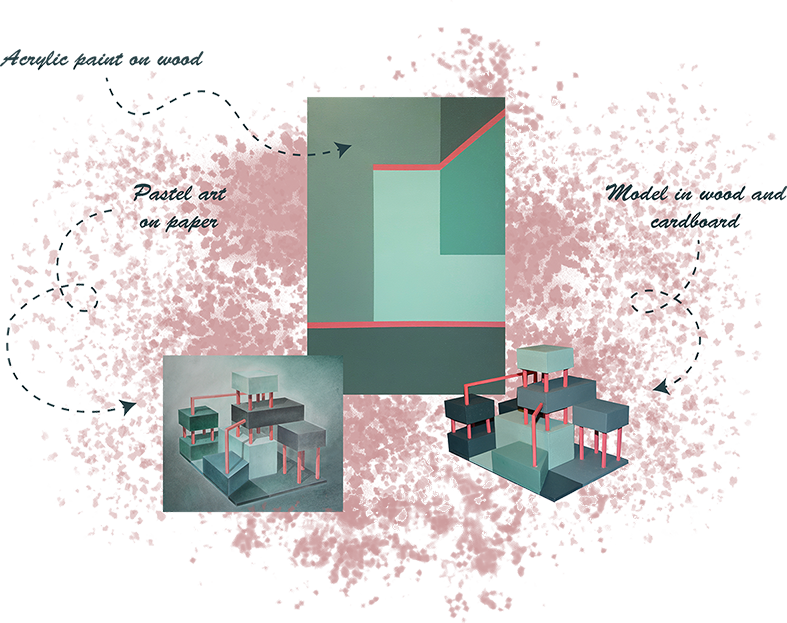
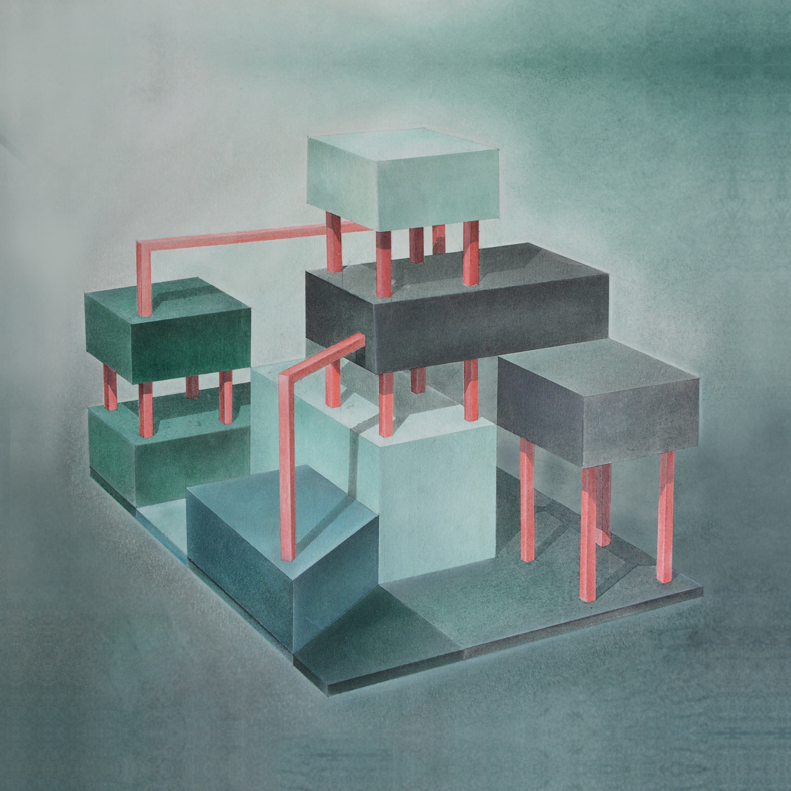

Pastellbilde
Form og farge
Studentprosjekt ved NTNU, vår 2015

Figur: Akrylmaling og harde pastellstifter ble benyttet på materialer som papp, tre og papir.
Kontekst og omfang
I emnet Form og farge II ved NTNU gjennomførte jeg en oppgave som gikk ut på å formidle en komposisjon i to- og tredimensjonal form og tegning. Oppgaven bestod av tre deler, én todimensjonal del ved bruk av maling og treplate, én tredimensjonal del i valgfritt materiale, og én todimensjonal del i valgfritt materiale som skulle formidle den tredimensjonale modellen.

Figur: Min formidling av den tredimensjonale modellen ved bruk av harde pastellstifter på pastellpapir i A2-format.